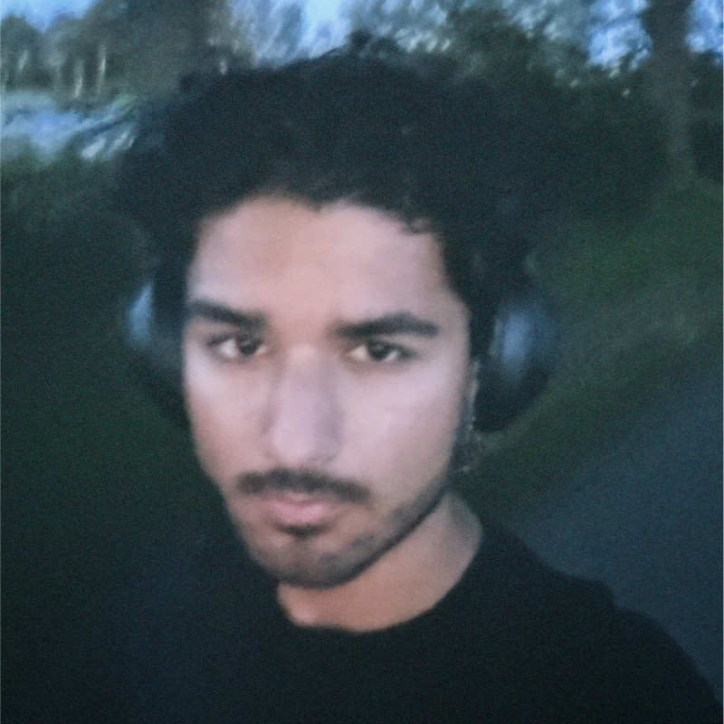

Faisal Anwari is een eerstejaars HBO-ICT-student aan de Hogeschool Utrecht. Faisal heeft interesse in cybersecurity, met name in pentesting en SOC-analyse. Faisal streeft ernaar om te groeien in het ICT wereld en een specialist te worden.